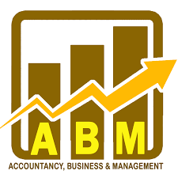

ABM
The ABM strand or Accountancy, Business and Management strand is one of the strands offered in the senior high school (SHS) program in the Philippines. This strand is designed for students who are interested in pursuing careers in the fields of business, finance, and accounting.
The ABM strand consists of various subjects such as accounting, economics, business ethics and social responsibility, business mathematics, business finance, organization and management, and principles of marketing. It also includes specialized subjects that focus on entrepreneurship, business communication, and business research.
